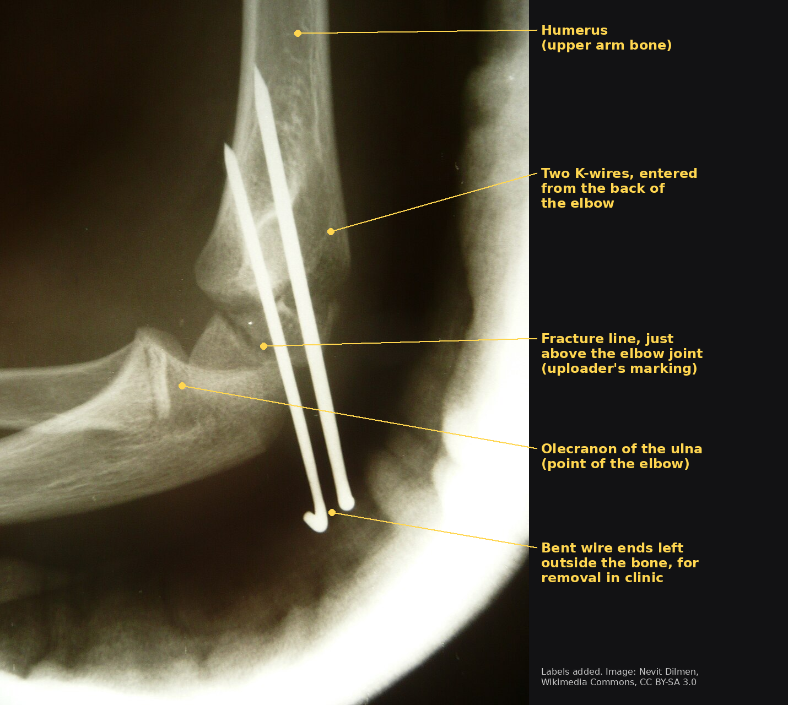
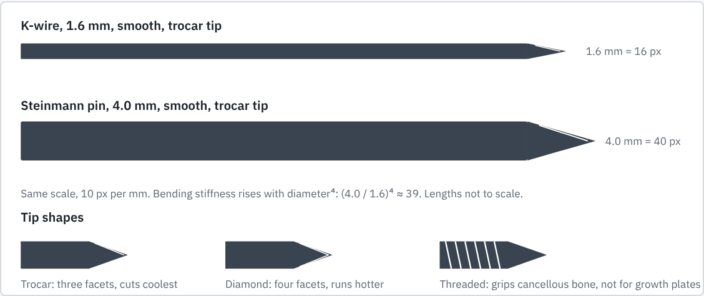
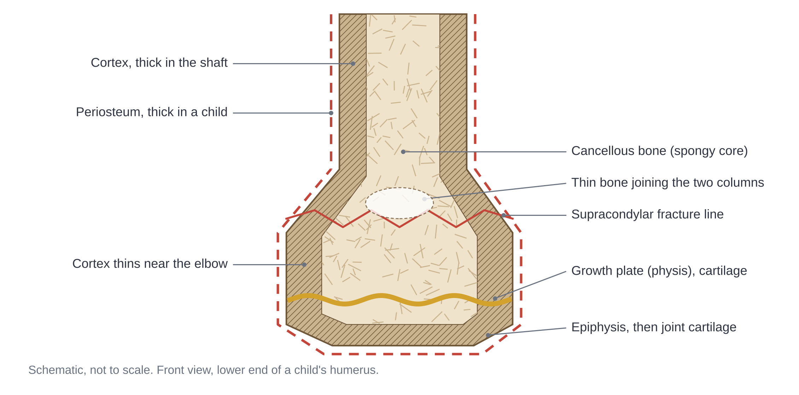
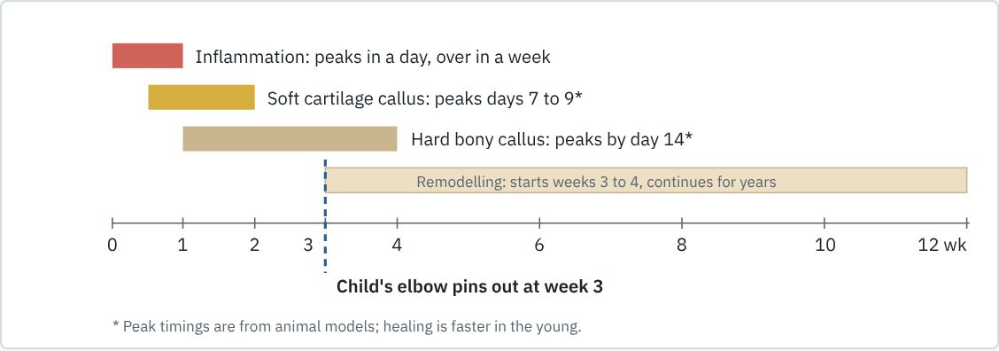
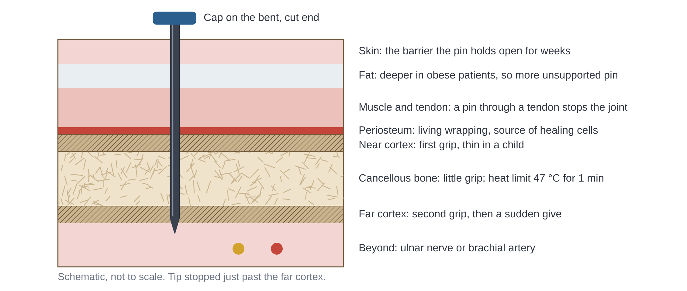
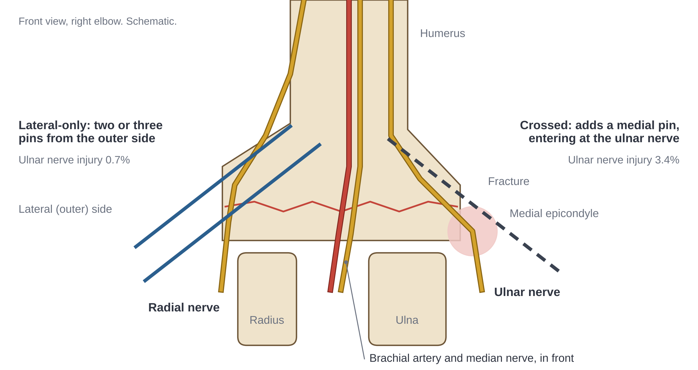
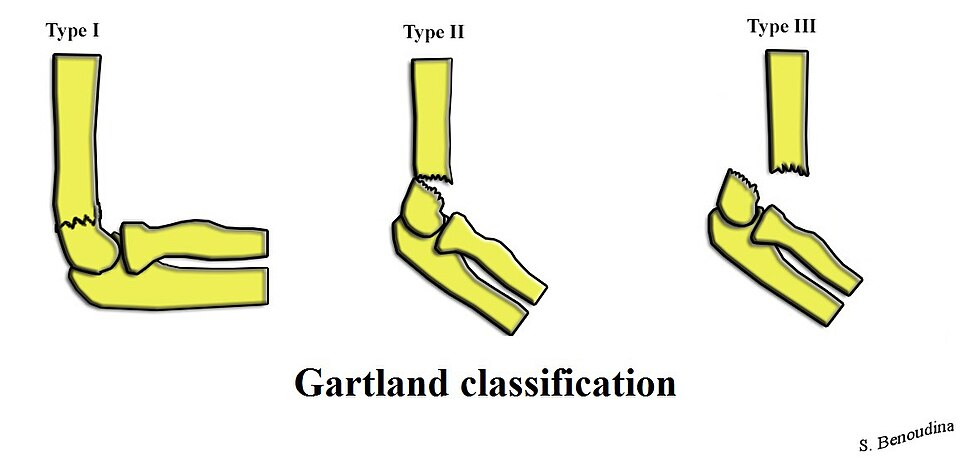

1What a fracture pin is and does
In one lineA pin is a stiff wire that holds broken bone still for a few weeks, then comes out.
A fracture pin is a stiff metal wire, 1 to 6 mm across, drilled through skin into bone so that it crosses a break and holds the pieces still while they heal. The thin ones, up to 3 mm, are Kirschner wires, or K-wires. The thicker ones are Steinmann pins, for larger bones and traction. Figure 1 shows the arrangement: two wires in from the back of the elbow, across the break, ends bent outside the bone. Figure 2 compares the two sizes and their tips. Both go in under live X-ray, stay for weeks, and come out in a clinic room.
For a manager the attraction is plain: a cut and ground length of wire, minutes of theatre time, nothing to cut out later. The surgical steps are in the AO Surgery Reference for paediatric distal humerus fractures; this page does not repeat them.

2The bone the pin goes into
In one lineThe bone is small, alive, growing and fast-healing; each of those limits the pin.
The running example is a displaced supracondylar fracture of the humerus, a break just above the elbow, in a child aged five to eight.[1] Figure 3 names the parts.

Hard shell, spongy core
Bone is two materials: a dense outer cortex and a spongy honeycomb inside, the cancellous bone. Above the elbow the humerus splits into two columns joined by thin bone, a zone of weakness where this fracture runs.[1] A drill tip feels cortex as resistance then a sudden give, and cancellous bone as almost nothing. So a pin grips in the two cortices it crosses, and plunges when the far one gives way.
Periosteum
Bone is wrapped in periosteum, a tough living membrane that supplies healing cells.[2] In children it is thick, so a broken bone often stays hinged on it. When it tears right through, the fracture is unstable in every direction.[1]
Bone is alive and dies from heat
Bone is populated by osteocytes, cells in tiny chambers in the mineral, and they have a heat limit. In rabbit bone, 47 °C for one minute significantly reduced new bone formation; 44 °C did not.[3] Wire tips pass it easily: drilled into pig bone, trocar tips reached 129 °C and diamond tips 98 °C,[4] and drilled K-wire tracks in rabbits lost their osteocytes.[5] Heat rises with drill speed and diameter; irrigation is the best coolant.[6] Dead bone does not grip, so the pin loosens.
The growth plate
Near each end of a child's long bone is a disc of cartilage, the physis or growth plate, where growth happens. The one at the elbow gives only about a fifth of the humerus's length.[7] Pins cross it here, and threads or heat can damage it. And because remodelling follows growth, this end corrects little after age four:[1] a fracture that heals crooked stays crooked, which is why it is pinned, not just cast. Growth-plate injuries are graded by the Salter–Harris classification.
Healing has a clock
Healing runs in overlapping stages: inflammation, which peaks within a day and ends within a week; a soft cartilage callus; a hard bony callus; then remodelling, which starts at three to four weeks and takes years. It is faster in the young.[2] Figure 4 sets the stages against the pin, which in this fracture comes out at three weeks.[1] Dwell time must match the clock: too short and the fracture shifts, too long and infection risk climbs.

Child bone against adult bone
Children's bone has less mineral, lower stiffness and lower strength than adult bone, but bends further and absorbs more energy before it breaks.[8] A thin smooth wire that only has to hold position for three weeks suits it. Adult weight-bearing bone heals slower and loads the implant harder, so plates, screws or nails take over, and the Steinmann pin's work is mostly traction.
3Everything the pin passes through or sits next to
In one lineBetween skin and bone sit fat, muscle, nerves, an artery and the immune system.

Skin: the barrier the pin breaks
Skin keeps bacteria out. A pin holds a hole in it open for weeks, giving bacteria a track to bone; Figure 6 shows the layers along it. Reported pin-track infection runs from 1 to over 25 per cent. Most is superficial and settles with antibiotics and pin removal,[1] but one child in a series of 622 developed infection of bone and joint.[9]
The nerves and artery around the elbow
Three nerves and one artery run close to the distal humerus. The ulnar nerve lies behind the medial epicondyle, the bony bump on the inner elbow, where a medial pin enters. The median nerve and brachial artery cross the front of the elbow; the radial nerve runs on the outer side. The fracture itself injures a nerve in 6.5 to 19 per cent of displaced cases;[1] the pin must not add to that. Figure 5 shows how it can: a medial pin costs one extra ulnar nerve injury for every 28 children.[10]

Muscle, tendon and joint surface
A pin through a tendon tethers it, so the joint cannot move and is stiff after removal. Joint cartilage cannot repair itself; a pin entering the joint grinds it and can carry infection in.
The immune response to a foreign body
Within minutes, body proteins coat the metal. Macrophages, the clean-up cells, cannot engulf a pin, so they fuse into giant cells on its surface and wall it off in a fibrous capsule. The surface decides how strong this reaction is, most of all in the first two to four weeks,[11] the pin's whole dwell time. A scratched or corroding surface provokes more inflammation and loosens the pin.
Nerves and pain
Skin and periosteum are rich in pain fibres. Most pin-site pain is skin rubbed by a protruding end, which decides how the pin is cut, bent and capped.
4Why pins are needed and how well they work
In one linePins work; what fails is the pin site, the pin position, or a nerve beside the pin.
The injury
This is the commonest elbow fracture in children: 55 to 80 per cent of their elbow fractures, about 177 per 100,000 children a year, usually from a fall onto an outstretched hand.[1] The Gartland classification grades it, as Figure 7 shows: type I undisplaced, type II hinged, type III fully displaced. Types II and III are pinned.


Without fixation
Left unreduced, 26 per cent of type II fractures healed with cubitus varus, the inward-bent "gunstock" arm.[1] A swollen elbow bent up in a cast also risks compartment syndrome, pressure cutting off the forearm's blood supply.
Alternatives
Cast alone for type I; open surgery when the fracture cannot be lined up from outside; plates and screws in adults; an external frame where skin is badly damaged.
How well it works
In 622 pinned children:[9]
- Pin migration needing a return to theatre: 1.8 per cent, the commonest complication.
- Infection: 1.0 per cent, one case deep.
- Position lost and re-pinned: 0.6 per cent.
- Compartment syndrome: 0.5 per cent.
Complication data also changed the technique. Crossed pins, one from each side, were standard because they are stiffer. Pooled trials now price the trade: crossed pins lose position less often (relative risk 0.70) but injure the ulnar nerve more (relative risk 2.21).[12] Lateral-only pinning, wires spread wide at the fracture, became the default; a series of 124 lost no reductions and injured no nerves.[13] Anatomy beat mechanics.
Population variability
The same wire performs differently in different places and patients. Infection was 1.0 per cent in a US series[9] and 37.5 per cent with exposed wires in an Indian series of a neighbouring elbow fracture.[14] A three-year-old's elbow will remodel a little; a nine-year-old's will not.[1] One product and one protocol do not fit all.
5From body to design
| Body fact | Design consequence | Manufacturer must control |
|---|---|---|
| Small bone, thin between its two columns | K-wires 0.8 to 3.0 mm;[15] 1.8 to 2.0 mm for this fracture[1] | Diameter tolerance; a range, not one size |
| Bigger bone and loads in adults | Steinmann pins to 6 mm; stiffness rises with diameter⁴ | Tensile strength for each diameter band[15] |
| Bone formation falls after 47 °C for one minute | Tip shape sets the heat: trocar 129 °C, diamond 98 °C, redesigned point 66 °C[4] | Tip form and grind; instructions to go slow and irrigate |
| Grip only in two thin cortices | Two or three smooth wires spread apart, not one thick one[13] | Straightness, stiffness |
| Growth plate crossed; harmed by threads and heat | Smooth wire only in children | Product line: smooth is the paediatric default |
| Foreign-body reaction strongest in weeks two to four | Passivated surface with no burrs or scratches[15] | Alloy to ISO 5832-1, cold-drawn, no welds[15] |
| Nerves and artery beside the bone | A tip that needs little thrust; clear on X-ray | Sharpness, batch to batch |
| Skin held open for weeks | Enough length to bend and cap, or to bury | Caps, cutter, family leaflet |
| Removal in clinic, child awake | Smooth surface, no ingrowth, a grippable end | Surface finish |
Where the body and the design pull against each other
Stiffness against size
Stiffness is cheap to buy with diameter: 1.6 to 2.0 mm is a 25 per cent wider wire but a 2.4 times stiffer one, and a 4.0 mm Steinmann pin is (4.0 ÷ 1.6)⁴ ≈ 39 times stiffer than a 1.6 mm K-wire. The body punishes diameter: a wider hole in thin bone, a tip nearer the nerves. Surgeons answer with two or three thinner wires spread wide at the fracture.[13] For the maker, the range matters more than the biggest size.
Cool against safe
Pushing harder cools the bone, because a faster feed gives heat less time to build.[6] But thrust is what carries the tip through the far cortex towards the nerve and artery of Figure 5. The maker can ease both at once: in the pig-bone tests the redesigned point needed the least thrust and ran coolest.[4] Tip geometry is the one lever that belongs to the maker alone.
Protruding against buried
Wires left outside the skin come out in clinic with pliers; buried wires need a second operation. In a US series, exposed wires saved about $3,400 a patient.[16] But where pin care was doubtful, the Indian series found infection in 37.5 per cent of exposed wires against 17.5 per cent of buried ones, and advised burying.[14] The right answer depends on the country, so the product should allow either: length to bend and bury, and a cap if left out.
The design envelope: five numbers the maker must hit
- Diameter 0.8 to 3.0 mm for K-wires, 1.8 to 2.0 mm for a child's elbow (rows 1, 4)
- Stainless tensile strength at least 1,240 MPa up to 2.8 mm, 1,100 MPa to 4 mm, 960 MPa to 6 mm[15] (row 2)
- Bone below 47 °C at the instructed speed, with irrigation (row 3)
- No burr or scratch visible to the naked eye; passivated[15] (row 6)
- Holds for 3 weeks, then out with hand pliers (rows 8, 9)
6What this means for a local manufacturer
The client's assumptions, from the staff forum: certified 316L bar must be imported with mill certificates, hospitals can steam-autoclave but have no gamma or ethylene-oxide sterilisation, and many children live a day's travel from the clinic, so pins stay in longer than planned and removal visits get missed.
Four things are fixed. Pins and wires have their own standard, ISO 5838: part 1 sets material, strength, finish and labelling; parts 2 and 3 the dimensions. The alloy must trace to ISO 5832-1. Sterility must be validated for the method available, here steam under ISO 17665. Pins are single use, all under an ISO 13485 quality system.
The legitimate adaptation is to local care: non-sterile pins for hospital autoclaving, wire long enough to bury, caps and a family leaflet written for long gaps between visits. The forbidden one is the metal or the tip: no substitute "surgical-looking" steel, no resharpening.
7Summary for the manager
A fracture pin is simple to make and hard to make right, because bone, nerves, skin and the immune system set limits that do not move. Those limits are certified alloy, a controlled tip, a clean surface, a size range and single use. Sterilisation, packaging and how the pin end is finished can follow local conditions.
References
- Vaquero-Picado A, González-Morán G, Moraleda L. Management of supracondylar fractures of the humerus in children. EFORT Open Rev. 2018;3(10):526–540. doi:10.1302/2058-5241.3.170049
- Marsell R, Einhorn TA. The biology of fracture healing. Injury. 2011;42(6):551–555. doi:10.1016/j.injury.2011.03.031
- Eriksson RA, Albrektsson T. The effect of heat on bone regeneration: an experimental study in the rabbit using the bone growth chamber. J Oral Maxillofac Surg. 1984;42(11):705–711. doi:10.1016/0278-2391(84)90417-8
- Piska M, Yang L, Reed M, Saleh M. Drilling efficiency and temperature elevation of three types of Kirschner-wire point. J Bone Joint Surg Br. 2002;84(1):137–140. doi:10.1302/0301-620x.84b1.10692
- Franssen BBGM, van Diest PJ, Schuurman AH, Kon M. Keeping osteocytes alive: a comparison of drilling and hammering K-wires into bone. J Hand Surg Eur Vol. 2008;33(3):363–368. doi:10.1177/1753193408087104
- Augustin G, Davila S, Mihoci K, Udiljak T, Vedrina DS, Antabak A. Thermal osteonecrosis and bone drilling parameters revisited. Arch Orthop Trauma Surg. 2008;128(1):71–77. doi:10.1007/s00402-007-0427-3
- Pritchett JW. Growth plate activity in the upper extremity. Clin Orthop Relat Res. 1991;(268):235–242. PMID 2060215.
- Currey JD, Butler G. The mechanical properties of bone tissue in children. J Bone Joint Surg Am. 1975;57(6):810–814. PMID 1158919.
- Bashyal RK, Chu JY, Schoenecker PL, Dobbs MB, Luhmann SJ, Gordon JE. Complications after pinning of supracondylar distal humerus fractures. J Pediatr Orthop. 2009;29(7):704–708. doi:10.1097/BPO.0b013e3181b768ac
- Slobogean BL, Jackman H, Tennant S, Slobogean GP, Mulpuri K. Iatrogenic ulnar nerve injury after the surgical treatment of displaced supracondylar fractures of the humerus: number needed to harm, a systematic review. J Pediatr Orthop. 2010;30(5):430–436. doi:10.1097/BPO.0b013e3181e00c0d
- Anderson JM, Rodriguez A, Chang DT. Foreign body reaction to biomaterials. Semin Immunol. 2008;20(2):86–100. doi:10.1016/j.smim.2007.11.004
- Xing B, Dong B, Che X. Medial-lateral versus lateral-only pinning fixation in children with displaced supracondylar humeral fractures: a meta-analysis of randomized controlled trials. J Orthop Surg Res. 2023;18(1):43. doi:10.1186/s13018-023-03528-8
- Skaggs DL, Cluck MW, Mostofi A, Flynn JM, Kay RM. Lateral-entry pin fixation in the management of supracondylar fractures in children. J Bone Joint Surg Am. 2004;86(4):702–707. doi:10.2106/00004623-200404000-00006
- Sahoo MM, Sahoo US, Jena M. Exposed versus buried K-wire fixation in paediatric lateral condyle humerus fractures: preliminary communication of a prospective comparative study. J Pediatr Orthop B. 2022;31(3):281–288. doi:10.1097/BPB.0000000000000880
- International Organization for Standardization. ISO 5838-1:2013 Implants for surgery, Metallic skeletal pins and wires, Part 1: General requirements; ISO 5838-2:1991 Part 2: Steinmann skeletal pins, Dimensions; ISO 5838-3:1993 Part 3: Kirschner skeletal wires. Geneva: ISO.
- Das De S, Bae DS, Waters PM. Displaced humeral lateral condyle fractures in children: should we bury the pins? J Pediatr Orthop. 2012;32(6):573–578. doi:10.1097/BPO.0b013e318263a25f
Figures
- Figure 1: adapted from "Rad 1300116.JPG", Nevit Dilmen, Wikimedia Commons, CC BY-SA 3.0. Labels added; labelled version CC BY-SA 3.0.
- Figures 2, 3, 4, 5 and 6: own drawings for this page.
- Figure 7: "Gartland Classification.jpg", S. Benoudina, Wikimedia Commons, CC BY-SA 4.0, unchanged.
Editor's notes: not part of the page. Delete before posting.
Verification log, 14 Nov 2026
- Checked against the PubMed abstract: refs 3, 4, 5, 6, 7, 8, 9, 10, 11, 12, 13, 14, 16. Every number on the page from these is in the abstract.
- Checked against open-access full text: ref 1 (PMC6335593) and ref 2 (PMC3105171).
- Checked against the standard's preview: ISO 5838-1:2013 (scope, Table 1 stainless rows, clauses 5 and 6). The K-wire range 0.8 to 3.0 mm is from the ISO 5838-3 catalogue overview, not the full text: confirm in the standard.
- Corrected by this check: trocar tips run hotter than diamond, not cooler (ref 4); pin migration, not infection, was the commonest complication (ref 9); "3 per cent of all children's fractures" and "cortex about 1 mm" removed as unverified; OpenStax and Checketts references dropped.
- Read the full papers before posting if you can; an abstract can omit a caveat.
Still uncited (general anatomy, state plainly or add a textbook reference)
- Children's periosteum is thick; skin and periosteum are rich in pain fibres; a pin through a tendon tethers it; cartilage does not repair; obesity lengthens the unsupported pin. A single anatomy textbook citation would cover all five.
- Ref 2's callus peak timings are from animal models; Figure 4 says so.
- Refs 14 and 16 are lateral condyle fractures, not supracondylar; the text says "a neighbouring elbow fracture".
Figures
- Figure 1: no growth-plate label. Ask a clinician on the course to point to it on this film, then add it.
- Figures 3, 5 and 6 are schematics. Check each label against Gray's Plate 1235 and a paediatric radiograph.
- No OpenStax or Radiopaedia images: both are non-commercial licences.